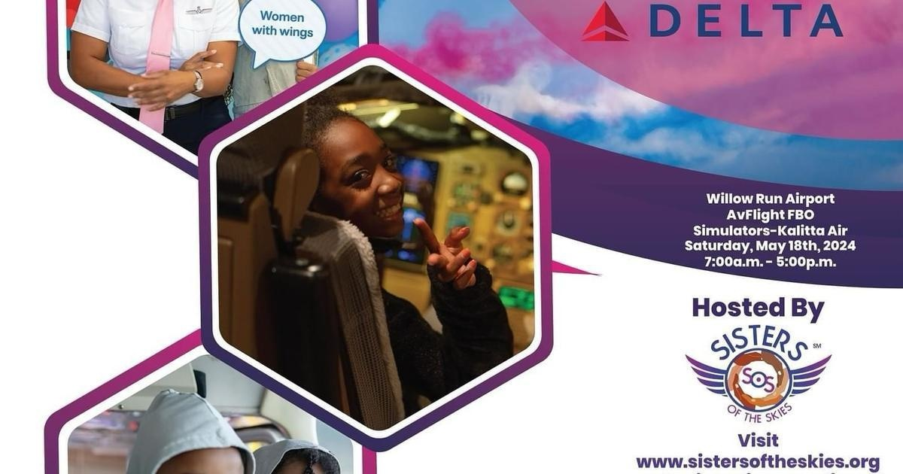

Sisters of the Skies bring Girls Rock Wings to DetroitYPSILANTI, Mich. (CBS DETROIT) - Sisters of the Skies is bringing their event, Girls Rock Wings (GRoW), to Detroit. Sisters of the Skies was birthed from a conversation that highlighted the lack of Black women in flight aviation. According to the Sisters of Skies website, the number of black female pilots in 2016 was 15 at United Airlines and five in the U.S. Coast Guard. Realizing the lack of representation, Nia Gilliam founded Sisters of the Skies. Girls Rock Wings was started to make a greater impact and show young Black girls they could be pilots. "It's so important to connect to other people who look like you because we have unique concerns and unique issues that only we can relate to," said Gilliam. Girls Rock Wings allows young ladies between the ages of 10 and 18 to spend a day gaining hands-on experience in the field of aviation as a professional pilot. The organization has taken the event to several states across the country, and now they're stopping in Detroit. "The day is very lengthy, but when you have parents that stay after and want to converse about how to get their students involved or even further, they send you a photo with their child doing a solo, that's how you know this program really works," said program director Monique Grayson. Registration opens on April 1. The event takes place on May 18 at Willow Run Airport. |
 |